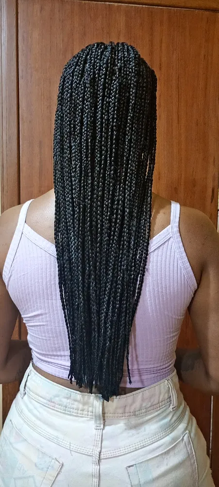
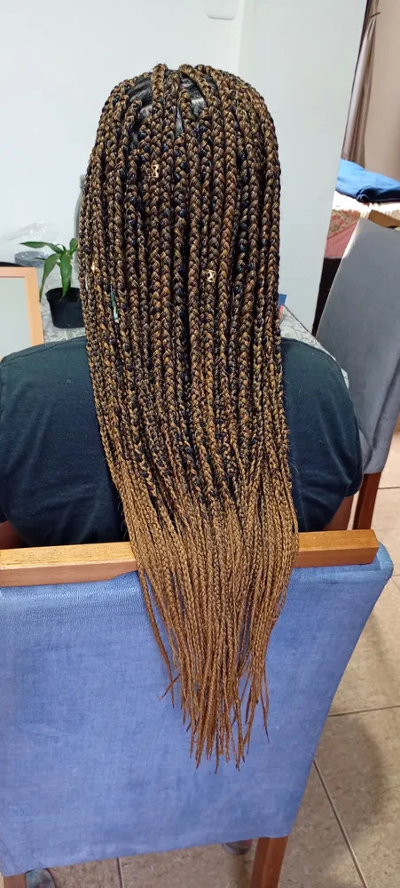
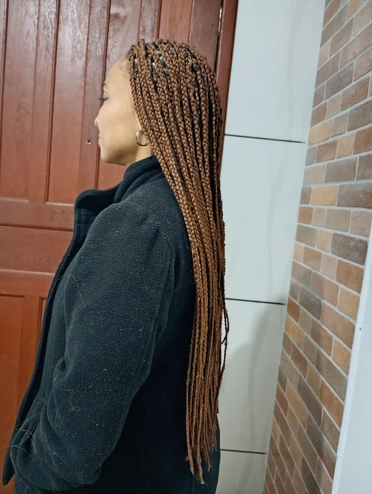
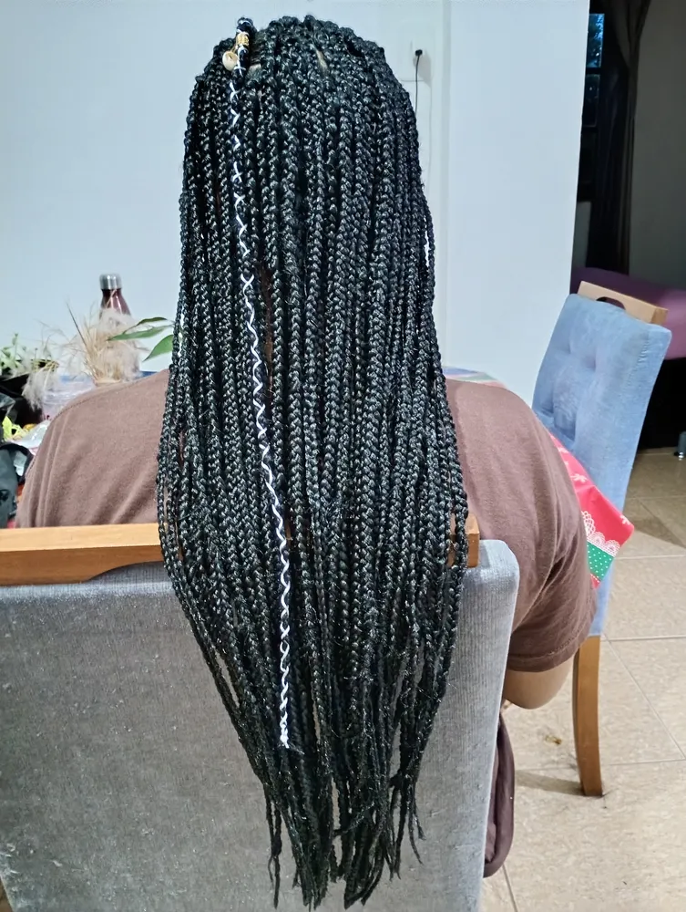
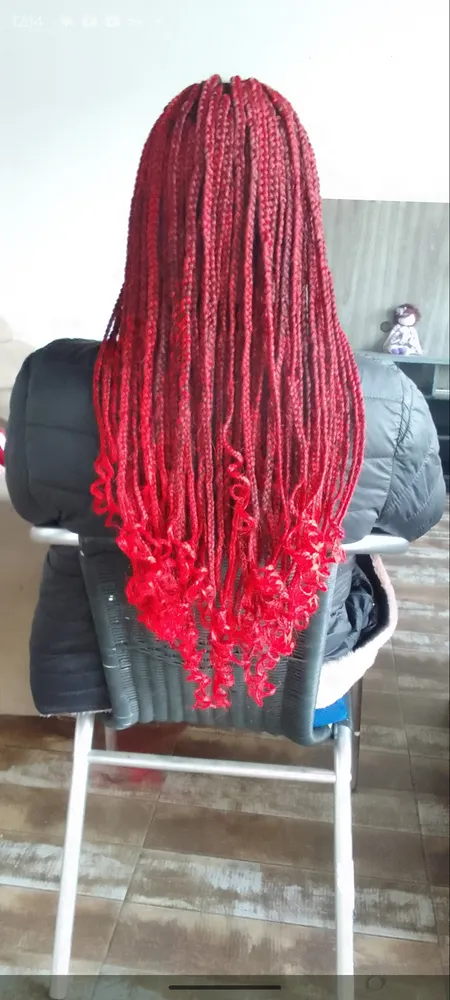
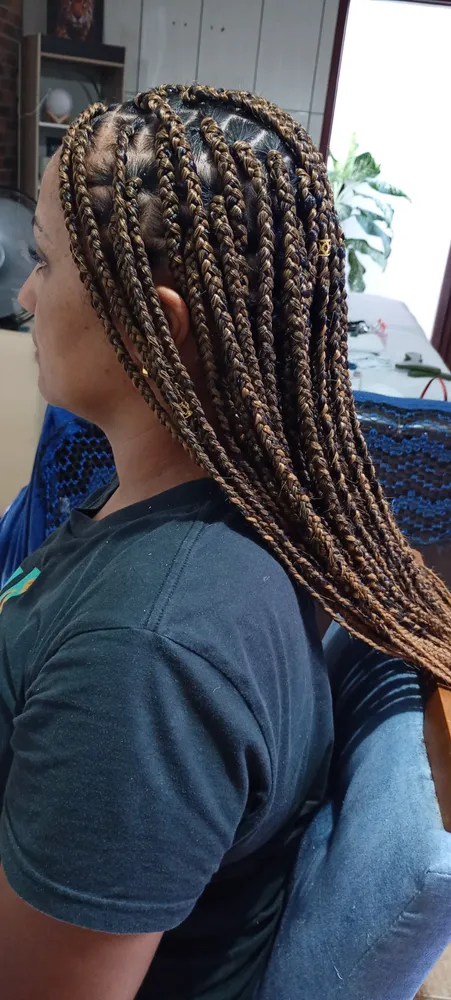
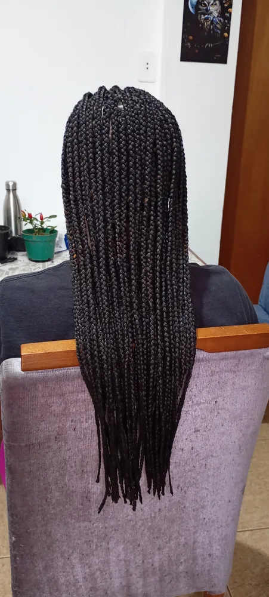
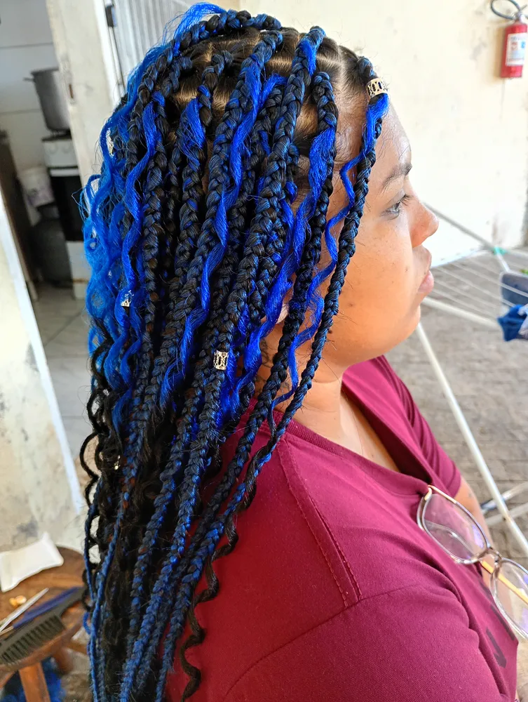

Box braids em Florianópolis: a trança clássica, do seu jeito
Box braids em Florianópolis e em toda a Grande Florianópolis: finas, médias ou grossas, do ombro até a cintura, em preto natural, caramelo, loiro, azul ou vermelho. Divisões alinhadas e raiz confortável.
- Finas, médias ou grossas
- Coloridas e ombré
- Com acessórios
- Raiz confortável


O que são box braids
Box braids são tranças soltas, feitas a partir de divisões quadradas no couro cabeludo, em que o jumbo (fibra sintética) é trançado junto com o cabelo natural da raiz até a ponta. O nome vem justamente dessas divisões em formato de caixinha.
É o estilo de trança mais pedido em Florianópolis, com mais de 110 buscas por mês só para "box braids", fora as variações como "box braids preço" e "box braids perto de mim". Versátil e prática, fica bonita solta, em coque, rabo alto ou meio preso.
A Karol faz box braids em qualquer espessura e comprimento, com cuidado especial nas divisões e na tensão da raiz, para proteger o seu cabelo natural.

Box braids finas, médias ou grossas
| Espessura | Visual | Tempo de trabalho | Duração |
|---|---|---|---|
| Finas | Delicado, com muito movimento | Maior | Costuma durar mais |
| Médias | O equilíbrio mais versátil | Médio | Boa durabilidade |
| Grossas | Presença forte e marcante | Menor | Um pouco menor |
Em dúvida sobre a espessura?
Mande a foto do seu cabelo que a Karol indica a melhor opção.
Estilos de box braids que você pode escolher
Box braids clássicas
Preto natural ou castanho escuro, lisas da raiz à ponta.
Coloridas
Azul royal, azul claro, vermelho, caramelo e loiro. Um jeito de mudar de visual sem química.
Ombré
Começa escura na raiz e clareia até a ponta. Fica lindo em comprimentos longos.
Com cachos nas pontas
Pontas cacheadas para dar movimento e volume.
Com acessórios
Anéis dourados, búzios e fios coloridos entrelaçados.
Longas até a cintura
Para o visual mais marcante, com mais jumbo e mais horas de trabalho.
Box braids feitas pela Karol
Clientes reais da Grande Florianópolis.








Como se preparar para fazer box braids
Escolha o modelo
Salve fotos de referência e mande no WhatsApp junto com uma foto do seu cabelo.
Combine o jumbo
A Karol orienta cor, quantidade e tipo de fibra.
Cabelo limpo e seco
Lave, hidrate levemente e seque bem. Sem creme pesado.
Reserve o dia
Box braids levam algumas horas. Venha com calma.
Como cuidar das box braids para durarem mais
Com os cuidados certos, as box braids ficam bonitas por 4 a 8 semanas.
- Durma com touca, lenço ou fronha de cetim
- Lave o couro cabeludo a cada 1 ou 2 semanas com shampoo diluído
- Seque muito bem a raiz, com secador em temperatura morna ou fria
- Evite penteados muito puxados nos primeiros dias
- Retire no prazo para não sobrecarregar a raiz
O calor e a umidade de Florianópolis no verão pedem atenção extra à secagem, para evitar odor no jumbo.
A história das box braids
Trançar o cabelo é uma tradição africana milenar. Em muitas culturas do continente, as tranças indicavam idade, estado civil, origem e posição social, e o momento de trançar era também um momento de convivência entre mulheres.
As box braids como conhecemos hoje, com divisões quadradas e extensão sintética, ficaram populares no mundo todo a partir dos anos 1990 e continuam entre os penteados mais usados. Para muitas pessoas, usar tranças é afirmação de identidade e de beleza negra, além de uma forma de proteger o cabelo natural.

O jumbo: a fibra usada nas box braids
O que é o jumbo
Fibra sintética vendida em mechas, que é trançada junto com o seu cabelo para dar comprimento e volume.
Cores
Do preto natural ao loiro, passando por castanho, caramelo, ruivo e cores vivas.
Quantidade
Depende da espessura e do comprimento. A Karol calcula no orçamento.
Jumbo com cachos
Para box braids com pontas cacheadas, entra também cabelo cacheado sintético.
Qualidade importa
Fibras de melhor qualidade embaraçam menos e deixam a trança mais bonita por mais tempo.
Coceira
Algumas pessoas sentem coceira com certas fibras. Avise se já aconteceu com você.
Dúvida sobre o jumbo?
A Karol orienta a cor e a quantidade certas no orçamento.
Qual comprimento de box braids escolher
| Comprimento | Para quem | Observação |
|---|---|---|
| Altura dos ombros (estilo chanel) | Quem quer praticidade e leveza | Menos peso e mais rapidez |
| Meio das costas | O equilíbrio mais pedido | Versátil para prender |
| Cintura | Quem quer impacto | Mais jumbo e mais horas de trabalho |
| Abaixo da cintura | Visual dramático | Atenção ao peso na raiz |
Box braids como penteado protetor
As box braids são chamadas de penteado protetor porque deixam o cabelo natural guardado dentro da trança, protegido do atrito, do calor da chapinha e da manipulação diária. Muita gente usa tranças justamente para dar um descanso ao cabelo e deixá-lo crescer.
Para que a proteção funcione de verdade, três coisas são fundamentais: tensão confortável na raiz, hidratação do couro cabeludo durante o uso e respeito ao prazo de retirada. Trança apertada demais ou usada por tempo demais pode causar o efeito contrário.
Como retirar as box braids sem danificar o cabelo
- Corte o jumbo um pouco abaixo do fim do seu cabelo natural
- Desfaça cada trança com calma, usando um pente fino ou os dedos
- Use óleo ou creme para ajudar a soltar os fios
- É normal sair cabelo: são os fios que cairiam naturalmente durante as semanas de uso
- Depois, lave com cuidado e faça uma boa hidratação
Se preferir, a retirada também pode ser combinada com a Karol, principalmente quando você já vai fazer uma nova trança.
Erros que estragam as box braids
Trança muito apertada
Dói, pode causar queda por tração e irrita o couro cabeludo.
Ficar tempo demais com as tranças
Passar muito do prazo sobrecarrega a raiz e embola o cabelo novo.
Não secar a raiz
A umidade presa causa odor e irritação, principalmente no verão.
Dormir sem proteção
O atrito com a fronha de algodão arrepia as tranças.
Esquecer do couro cabeludo
Ele continua precisando de limpeza e hidratação.
Penteados puxados nos primeiros dias
A raiz ainda está se acostumando com o peso.
Box braids no calor de Florianópolis
O verão de Florianópolis é quente e úmido, e isso muda os cuidados com as tranças. O couro cabeludo transpira mais, o jumbo demora mais para secar depois do mar e a umidade pode ficar presa perto da raiz.
A dica é lavar a raiz com mais frequência nessa época, secar muito bem com secador em temperatura morna e, depois da praia, sempre enxaguar o sal com água doce. Tranças um pouco mais grossas ou mais curtas secam mais rápido e podem ser uma boa escolha para o verão.

Quanto tempo leva para fazer box braids
O tempo muda muito conforme o modelo. A estimativa exata vem junto com o orçamento.
| Modelo | Tempo de trabalho |
|---|---|
| Grossas, na altura dos ombros | Menor tempo |
| Médias, no meio das costas | Tempo intermediário |
| Finas, até a cintura | Maior tempo, um dia de trabalho |
| Com cachos ou acessórios | Um pouco mais |
Como usar as box braids no dia a dia
Uma das maiores vantagens das box braids é a versatilidade. Com as mesmas tranças você muda de visual a semana inteira: soltas com a risca no meio, meio preso com um coque no topo, rabo alto para treinar, coque baixo para o trabalho, tranças presas em uma grande trança lateral para a festa.
Acessórios como anéis dourados, fios coloridos e lenços completam o look. Só evite prender tudo muito apertado nos primeiros dias, para não forçar a raiz.
Karoline Maia, terapeuta corporal e trancista
Karoline Maia é a fundadora da Karoline Maia Terapias e atende pessoalmente cada cliente, da massagem terapêutica, ventosa, pedras quentes e Reiki às tranças box braids e boho. Todas as fotos deste site são de atendimentos reais feitos por ela.
Atendemos com hora marcada em toda a Grande Florianópolis. Telefone e WhatsApp: (48) 99145-5759. Instagram: @karoline_maia_terapias.

Perguntas sobre box braids
Quanto custa box braids em Florianópolis?
Depende da espessura, do comprimento e da quantidade de jumbo. Mande a foto do modelo no WhatsApp e receba o valor exato.
Quanto tempo leva para fazer box braids?
Tranças grossas e curtas são mais rápidas; finas e longas levam mais tempo. A estimativa vem junto com o orçamento.
Box braids estragam o cabelo?
Feitas com tensão confortável, respeitando o prazo de retirada e com cuidado na manutenção, não. O problema é trança muito apertada ou usada por tempo demais.
Quanto tempo duram as box braids?
De 4 a 8 semanas, com os cuidados certos.
Faz box braids masculinas?
Pergunte pelo WhatsApp com uma foto do modelo e do cabelo atual.
Posso lavar o cabelo com box braids?
Pode. Lave o couro cabeludo a cada uma ou duas semanas com shampoo diluído, massageando a raiz, e seque muito bem com secador em temperatura morna.
Box braids coçam?
Nos primeiros dias pode haver uma leve coceira enquanto a raiz se acostuma. Coceira forte ou persistente pode ser sensibilidade à fibra; avise a Karol.
Dá para fazer box braids em cabelo curto?
Na maioria dos casos, sim. Com alguns centímetros já é possível prender o jumbo. Mande uma foto do seu cabelo para avaliar.
Posso ir à praia e à piscina com box braids?
Pode. Depois, enxágue com água doce e seque bem a raiz para evitar umidade presa.
De quanto em quanto tempo posso refazer as tranças?
O ideal é dar um intervalo entre uma trança e outra para o cabelo e o couro cabeludo descansarem, com uma boa hidratação no meio.
Box braids podem ser feitas em criança?
Podem, com modelos mais leves, tranças mais grossas e tensão bem suave na raiz para proteger o cabelo em crescimento.
Qual a diferença entre box braids e knotless braids?
Nas box braids tradicionais há um pequeno nó na raiz, onde o jumbo é preso. Nas knotless, a trança começa só com o seu cabelo e o jumbo entra aos poucos, o que deixa a raiz mais leve e natural.
Sua box braids começa com uma foto.
Mande a referência e receba o orçamento.